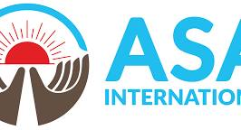
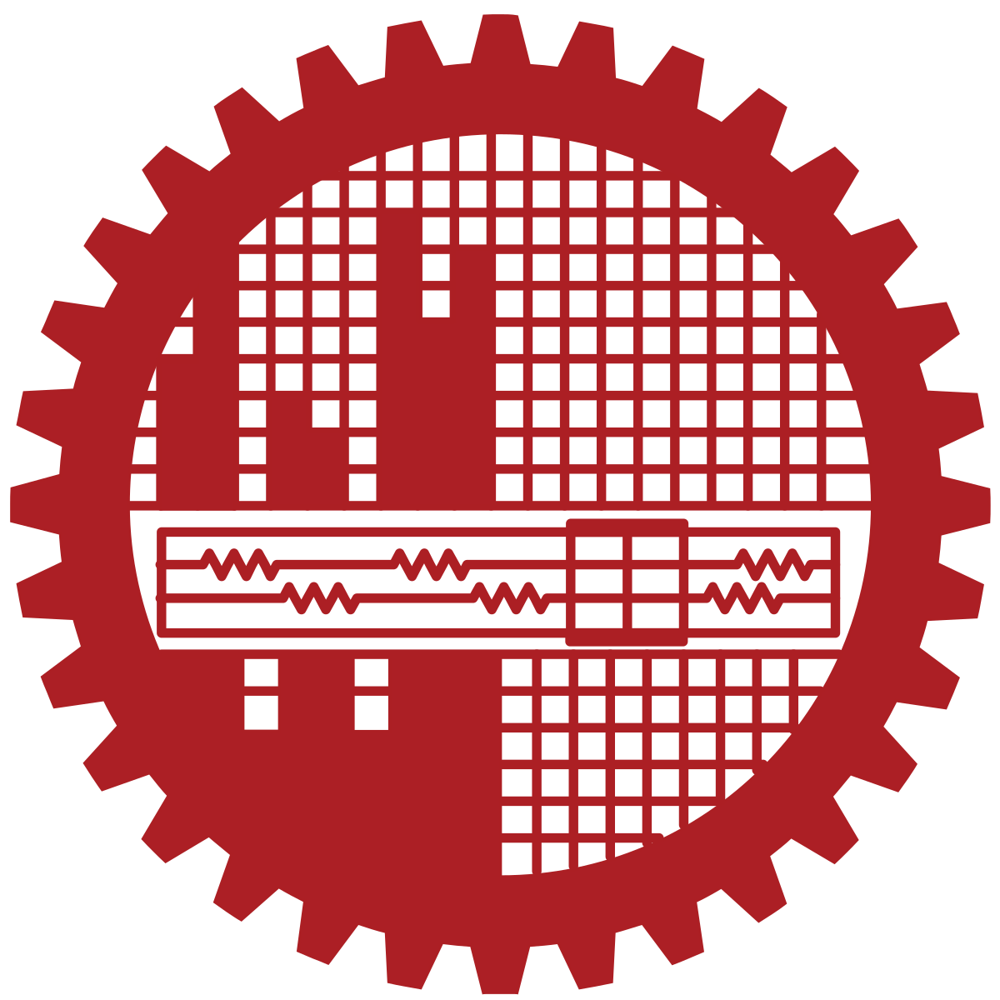

Welcome to my homepage
My name is Turja Kundu. I am a PhD candidate in the Department of Computer Science and Engineering at the University of North Texas, advised by Dr. Sanjukta Bhowmick. I began my PhD at Southern Illinois University Carbondale and transferred to UNT.
My research sits at the intersection of high-performance computing and scalable graph learning. Latency decides whether a prediction is usable, and interpretability decides whether it is trusted, so I ask how graph structure can be turned into an explicit, interpretable, and computationally efficient representation instead of being accessed through repeated neighborhood propagation. In practice that means graph neural network designs that avoid propagation entirely, parallel graph algorithms for GPUs, and keeping those representations valid as graphs change.
In summer 2026 I was a Computational Science Intern at Fermi National Accelerator Laboratory, where I built a scalable CVN neutrino-event inference pipeline by integrating LArSoft/larrecodnn with NuSONIC and NVIDIA Triton, and benchmarked its latency and throughput.
Before starting my PhD I spent about seven years as a software engineer in Bangladesh, most recently as Assistant Director (IT) at ASA International, where I built web-based microfinance banking systems. I hold a B.Sc. in Computer Science and Engineering from BUET.
I am currently on the job market, looking for postdoctoral positions as well as teaching and research faculty positions. You can download my full CV here.
Research Interests
- Explicit, interpretable structural representations for graph learning
- Parallel graph algorithms on GPUs and accelerators
- Low-latency inference for scientific computing
- Knowledge structure in large language models
My research page describes the vision, contributions, and agenda in full.
News and Announcements
- [Aug 2026] Fermilab Completed my Computational Science Internship at Fermilab, building a CVN neutrino-event inference pipeline on LArSoft, NuSONIC, and NVIDIA Triton.
- [2026] Under Review Our paper ATLAS: Adaptive Topology-based Learning at Scale for Homophilic and Heterophilic Graphs is under review. The preprint is on arXiv.
- [May 2026] Fermilab Started as a Computational Science Intern (FCSI) at Fermi National Accelerator Laboratory, Batavia, IL.
- [2025] ICCS 2025 Our short paper Centrality Resilience in Complex Networks was accepted at ICCS 2025.
- [2025] Presented the poster Effect of Graph Structure vs. Feature Quality for GCN at SIAM 2025.
- [2025] Mentored two undergraduate researchers through the CRA UR2PHD program.
- [2023] IEEE Cluster HIOS was published at IEEE Cluster 2023, supported by an NSF Travel Grant.
Publications
-
Under Review · 2026 · First Author
-
ICCS 2025 · 2025 · Short PaperCentrality Resilience in Complex Networks
-
SIAM 2025 · 2025 · PosterEffect of Graph Structure vs. Feature Quality for GCN
-
IEEE Cluster 2023 · 2023 · First AuthorHIOS: Hierarchical Inter-Operator Scheduler for Real-Time Inference of DAG-Structured Deep Learning Models on Multiple GPUs
-
SC Workshops 2023 · 2023Accuracy-Constrained Efficiency Optimization and GPU Profiling of CNN Inference
Experience & Education
-
2021 — PresentPh.D. Candidate, Computer Science and Engineering
-
May — Aug 2026Computational Science Intern
-

2017 — 2021Assistant Director (IT) -
2015 — 2017Software Engineer
-
2012 — 2015Software Engineer
-

2007 — 2012B.Sc. in Computer Science & Engineering
Teaching & Mentoring
-
2021 — 2024Teaching Assistant
-
2021 — 2022Teaching Assistant
-
Summer 2025Undergraduate Research Mentor — CRA UR2PHD
My teaching page covers my philosophy, methods, and courses I can teach.
Technical Skills
- Languages: C, C++, CUDA, MPI, OpenMP, Python, Java, Fortran, R, Bash
- Libraries: PyTorch, cuDNN, NCCL, CUPTI, ROS, NetworkX, scikit-learn, NumPy, Pandas
- Profiling and tools: Nsight Systems/Compute, perf, Wireshark
- Graduate coursework: Deep Learning, Distributed Systems, Numerical Computation, Graph Theory, Software–Hardware Codesign for DNN, Computer Architecture, Real-Time Operating Systems, Computational Statistics
Awards
-
2023NSF Travel Grant — IEEE Cluster 2023
-
2010Dean's List Award — BUET